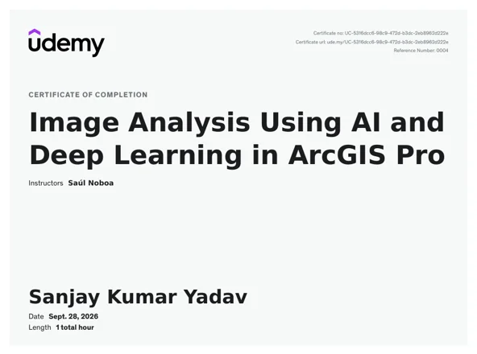

Data collection & management
I design and manage collection systems with validation, completeness checks and practical workflows that support consistent, high-quality data.
EXPERTISE
An integrated approach to collection, analysis, geographic insight and digital development.
I design and manage collection systems with validation, completeness checks and practical workflows that support consistent, high-quality data.
I turn complex datasets into interactive dashboards, useful KPIs and reports that help teams understand trends and monitor performance.
I use spatial analysis, mapping and geographic reporting to help organizations understand the places, patterns and communities behind their data.
I develop user-friendly websites, database-integrated applications and online tools for collection, reporting, monitoring and workflow automation.
AI + GIS · COURSE-BASED LEARNING
Building on practical data and GIS skills, with introductory training in AI-assisted image analysis.

Completed a 1-hour Udemy course introducing AI and deep learning for image analysis in ArcGIS Pro.
Udemy · 28 Sep 2026
View course certificate ↗ESTABLISHED SKILLS / GIS
QGIS and ArcGIS for spatial analysis, GIS mapping, visualization and geographic reporting. This is the foundation for my AI + GIS learning.
ESTABLISHED SKILLS / DATA & WEB
Power BI, Advanced Excel and SQL for analysis and reporting, alongside data collection systems and database-integrated web applications.
AI experience shown here reflects course-based learning in ArcGIS Pro image analysis. My broader data and web development expertise is described separately.
FULL TOOLKIT
DATA · GIS · DIGITAL DEVELOPMENT